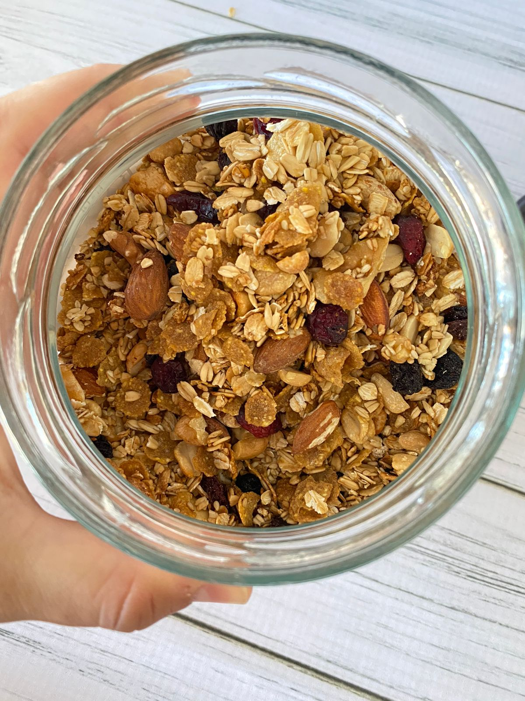

Sobre Mi

🌸Mi nombre es Antonella , soy Nutricionista , egresada de la Universidad Nacional de la Matanza , actualmente vivo en Vicente Lopez . 🌸Como Nutri deseo poder enseñar hábitos saludables, realizando educación alimentaria, sin restricciones , acorde a cada persona . 🌸Cada persona es un mundo , y la alimentación va más allá de una fruta o verdura , debe ser saludable para cada uno y adaptable a cada estilo de vida. 🌸Espero que les ayude un poco de cada contenido que subo, para poder de a poco ir adaptando esos hábitos. 💫😍👏 Nutrivera 🌱


